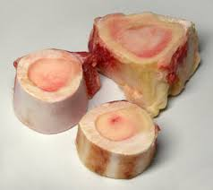

अस्थिमज्जा

अस्थिमज्जा या 'अस्थिमेरु' शरीर की अस्थियों के बीच का वह मुलायम और स्पंजी भाग है, जहाँ रक्त का उत्पादन होता है। मज्जा रक्त कोशिकाओं का उत्पादन करने वाली स्टेम कोशिकाओं से भरी होती हैं, जो श्वेत रक्त कोशिकाओं, लाल रक्त कोशिकाओं या प्लेटलेट्स में विकसित होती हैं।
- वयस्क मानव की बड़ी अस्थियों में मज्जा रक्त कोशिकाएं निर्माण करने में सहायक होता है। इसमें कुल शरीर भार का चार प्रतिशत समाहित रहता है, यानि लगभग 2.6 कि.ग्रा.।
- अस्थिमज्जा गूदे के समान मृदु ऊतक है, जो सब अस्थियों के स्पंजी भाग के अवकाशों में, लंबी अस्थिओं की मध्यनलिका की गुहा में और बड़े आकार की हेवर्सी नलिकाओं में पाया जाता है।
- भिन्न-भिन्न अस्थियों में और अणु के अनुसार उसके संघटन में अंतर होता है। विभिन्न प्रकार की श्वेत रक्त कोशिकाएं हमारी प्रतिरक्षा प्रणाली का हिस्सा हैं, जो संक्रमण से लड़ने में प्रतिरक्षा प्रणाली की मदद करती हैं।
- लाल रक्त कोशिकाएं हमारे पूरे शरीर में ऑक्सीजन की आवा-जाही के लिए जिम्मेदार हैं। प्लेटलेट्स रक्तस्राव को रोकने के लिए रक्त का थक्का बनाते हैं।
- अस्थिमज्जा स्टेम कोशिकाओं का लगातार उत्पादन करती रहती हैं और ये हमारे शरीर की ज़रूरत के अनुसार ही अलग-अलग प्रकार की कोशिकाओं को विकसित करती हैं।
- मज्जा दो प्रकार की होती है- 'पीली' और 'लाल'। पीली मज्जा का आधार तांतव ऊतक होता है, जिसमें रक्त वाहिकाएँ और कोशिकाएँ पाई जाती हैं, जिनमें अधिकांश वसा कोशिकाएँ होती हैं। कुछ लाल मज्जा के समान कोशिकाएँ मिलती हैं।
- लाल मज्जा का आधार संयोजी ऊतक होता है, जिसके ढाँचे के जाल में 'रजतरागी' तंतु और उससे संबंधित जीवाणुभक्षी कोशिकाएँ तथा कई प्रकार की रक्त कणिकाएँ और उनके पूर्वगामी रूप, कुछ वसा कोशिकाएँ तथा कुछ लिंफ पर्व होते हैं।